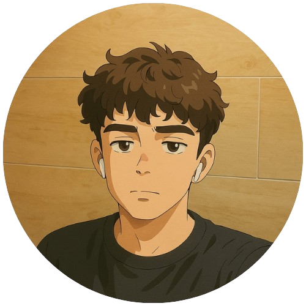

Sobre mim
Guilherme Alves
Sou Guilherme, desenvolvedor front-end apaixonado por criar experiências digitais incríveis, buscando sempre aprimorar minhas habilidades e aprender novas ferramentas. Acredito que o aprendizado contínuo é essencial para um bom desenvolvimento, e estou sempre em busca de novos desafios para crescer tanto profissionalmente quanto pessoalmente.
Conhecimentos .
Meus projetos .
Gamelist
Gamelist foi um projeto desenvolvido com o objetivo de fornecer uma plataforma para feedbacks sobre jogos.
Ver projetoStarsbio
Projeto colaborativo que simula a aplicação de um biocurativo no tratamento de feridas, unindo tecnologia e administração.
Ver projeto